Pada bagian awal interface Apps SampahQu.id pertama kita membuka aplikasi akan melakukuan loding dengan menampilkan logo berupa tulisan "SampahQu.id". Setelah loading akan muncul form login sebagai tempat pengguna untuk masuk ke akun masing-masing dengan menginputkan username dan password yang dibuat. Bagi pengguna yang belum mempunyai akun, dapat membuat akun baru dengan mengklik "Buat Akun". Pada saat membuat akun baru, pengguna diminta untuk menginputkan alamat lengkapnya agar memudahkan proses penjemputan. Bagi pengguna yang sudah mempunyai akun dan lupa kata sandi dapat membenari dengan mengklik disini pada "Lupa Kata Sandi"
Interface Menu Home
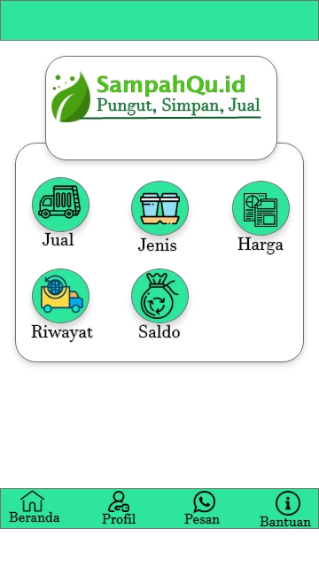
Setelah pengguna berhasil login, akan muncul halaman utama atau home. Pada halaman uttama terdapat 5 fitur yang dilengkapi dengan menu-menu tambahan. 5 fitur tersebut yakni, jual, jenis sampah, harga sampah, riwayat dan saldo. Pada bagian bawah halaman utama terdapat menu tambahan yakni menu beranda untuk kembali ke halaman utama, profil, pesan dan menu bantuan.
Interface Menu Jual
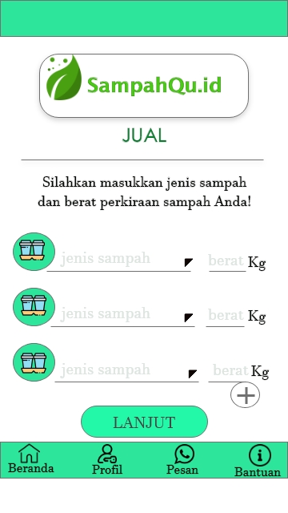
>>>
>>>
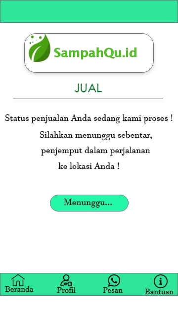
>>>
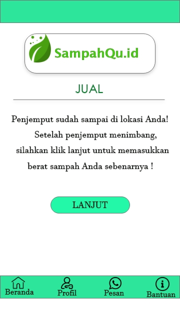
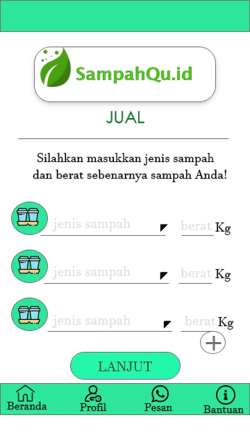
>>>
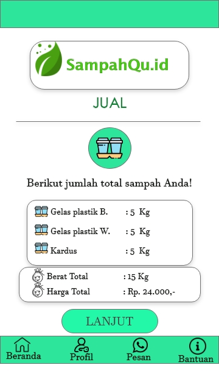
>>>
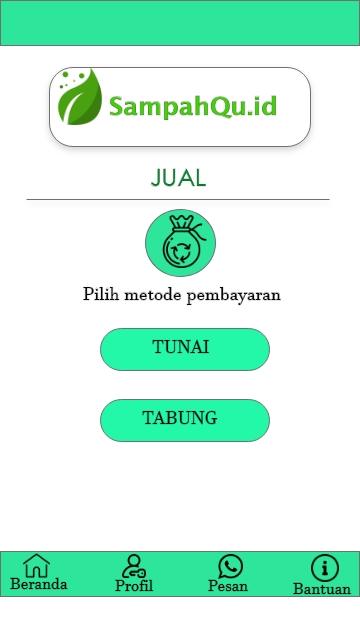
>>>
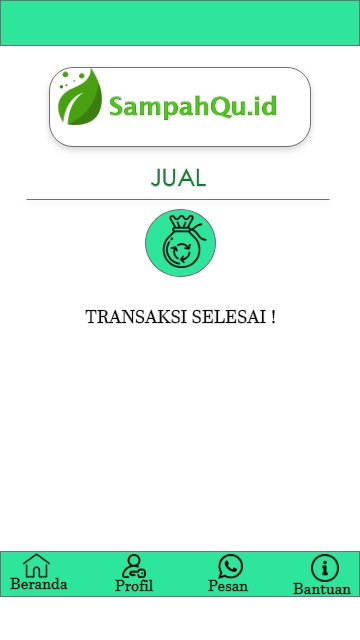
Menu atau fitur jual merupakan menu utama bagi para pengguna yang ingin menjual sampah-sampahnya. Pada awal proses penjualan, pengguna diminta untuk menginputkan jeni sampah dan berat perkiraan terlebih dahulu. Hal ini bertujuan agar penjemput tahu perkiraan sampah yang akan diangkut, transportasi yang akan digunakan dan estimasi biaya yang akan dikeluarkan jika penjual meminta pembayaran secara tunai. Setelah selesai akan muncul tabel jenis dan berat sampah yang telah diinputkan. Setelah itu pengguna menunggu penjemput sampai di lokasi penjemputan. Setelah penjemput samapai, sampah akan ditimbang dan pengguna akan diminta untuk menginputkan jenis dan berat sampah sebenarnya. Setelah selesai akan kembali muncul tabel jenis dan daftar beserta total harga penjualan dari sang pengguna. Selesai itu, pengguna dapat memilih metode pembayaran apakah akan tunai atau di tabung. Bila tunai, penjemput akan membayar tunai hasil penjualan sampah sang pengguna. Jika tabung maka hasil penjualan akan masuk kedalam saldo yang dapat disimpan atau diambil untuk membeli pulsa, token listrik atau pembayaran tagihan PDAM.
Interface Menu Jenis Sampah
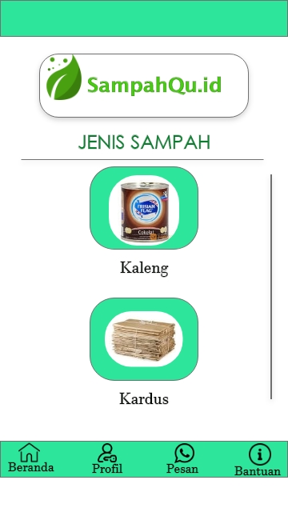
>>>
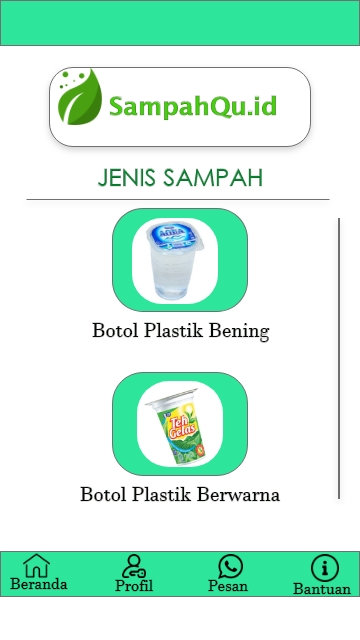
Pada menu jenis sampah, pengguna dapat melihat jenis-jenis sampah yang dapat dijual kepada SampahQu.id. Dengan adanya daftar jenis sampah akan memudahkan pengguna untuk dapt memilah dan memilih sampah-sampah yang dapat dijual kepada sampahQu.id serta dapat mengelompokkan sampah-sampah sesuai jenisnya. PAda interface jenis sampah ini dapat di scroll kebawah hingga dapat melihat jenis sampah yang terakhir. Terdapat 15 jenis sampah yang SampahQu.id beli yakni, PP Bening, PP Berwarna, PP Ember, PET, HDPE, HDPE Blowing, Kardus, Koran, Kertas Cetak, Aluminium, Kaleng, Tutup Galon, PET Berwarna, Besi dan Galon Bekas.
Interface Menu Harga Sampah
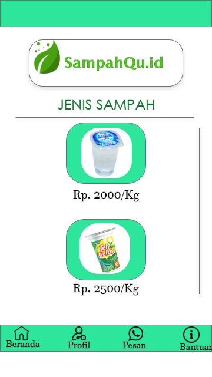
>>>
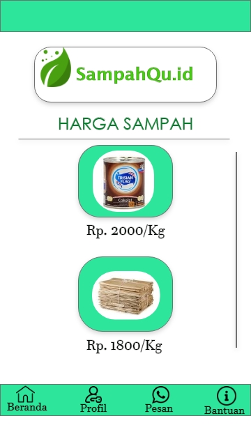
Pada menu harga sampah pengguna dapat melihat harga-harga dari setiap jenis sampah, sehingga pengguna dapat mengestimasikan berapa rupiah yang akan didapat dari hasil penjualan sampahnya. Setiap-setiap sampah memiliki harga yang berbeda baik setiap kilonya atau setiap sebuahnya. Pada menu ini juga dapat di scroll kebawah hingga harga sampah yang terakhir. Untuk melihat daftar sampah juga dapat dilihat pada laman landing page menu about, disana telah tertabel harga seluruh jenis sampah.
Interface Menu Riwayat
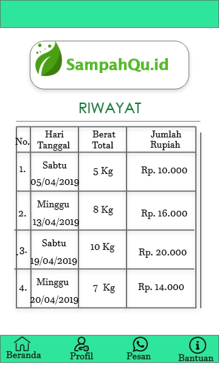
Menu riwayat berisikan arsip atau catatan transaksi yang sudah pernah dilakukan oleh pengguna. Pada menu ini diberitahukan hari dan tanggal pengguna melakukan transaksi, berat total sampah, dan harga total yang didapatkan oleh pengguna dari hasil penjualan. Menu ini berguna untuk menjadi arsip baik bagi SampahQu.id maupun bagi pengguna. Sekaligus agar menjadi jembatan kepercayaan pengguna terhadap SampahQu.id jika mereka mensaldokan uangnya sehingga terlihat jelas bagi pengguna sebagai bentuk transparansi dan kepercayaan.
Interface Menu Saldo
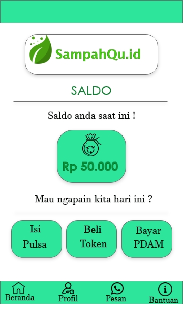
Menu saldo menjadi informasi terkait jumlah uang atau saldo pengguna dari hasil penjualan sampah. Jadi setiap pengguna melakukan transaksi penjualan sampah dan memilih metode pembayaran secara tabung, makan otomatis saldo pengguna akan bertambah. Saldo pengguna dapat digunakan untuk mengisi pulsa, token listrik atau pembayaran tagihan PDAM melalui SampahQu.id. Jadi SampahQu.id akan langsung mengisikan pulsa atau token ketika pengguna memintanya, dan akan otomatis akan berkurang.
Interface Menu Tambahan
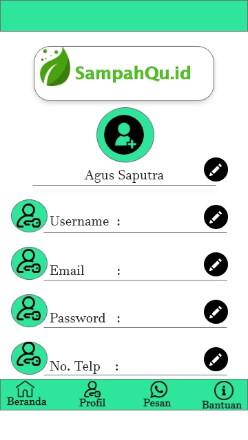
>>>
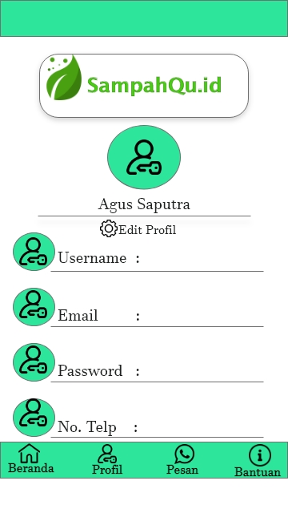
>>>
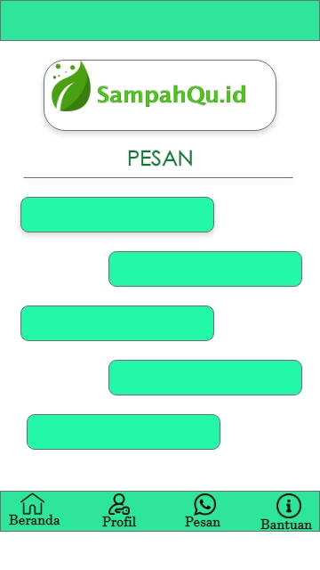
>>>
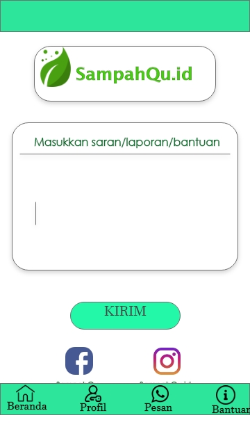
Selain menu-menu utama terdapat menu tambahan yang ada pada interface Apps SampahQu.id. yakni adanya beranda untuk kembali ke halaman utama, kemudian ada menu profil yang menampilkan profil pengguna serta dapat mengedit profilnya, menu pesan atau chatt untuk sarana komunikasi antara pengguna dengan SampahQu.id dan menu bantuan untuk memudahkan pengguna jika terjadi kendala, maupun memberikan laporan dan saran.